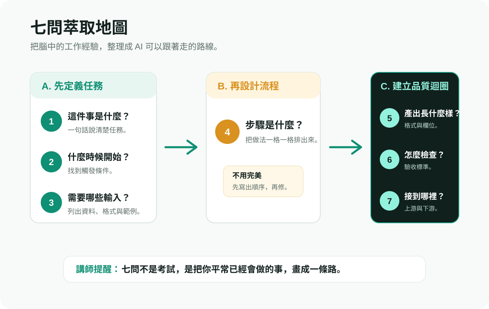

AI 生成靈魂融入日常：把自己的方法交給協作
核心承諾：你今天會帶走一張屬於你自己的 AI 工作流卡。這是三天裡的招牌課。
3 小時版本：從知道，到真的做出來
不只是寫 Prompt
今天的轉換
前兩天你學會了看懂 AI、選對工具。今天是最重要的一天：你要把自己的工作方法教給 AI。
核心承諾
寫一次，用一百次。這不是技術，而是你的職場經驗被看見、被複製、被改進的方式。
什麼是 Skill？
Skill = 你的經驗 + 結構化的流程 + AI 可以執行的指令。
| 組成 | 白話 | 範例：整理會議紀錄 |
|---|---|---|
| 觸發條件 | 什麼時候啟動 | 收到會議錄音或逐字稿時 |
| 需要什麼輸入 | 你要給 AI 什麼東西 | 逐字稿、與會者名單、會議主題 |
| 步驟 | 一步一步怎麼做 | 擷取重點 -> 分類決議/待辦 -> 指派負責人 -> 格式化 |
| 產出長什麼樣 | 最終成果的格式 | 待辦事項 / 負責人 / 截止日表格 |
| 怎麼檢查好壞 | 驗收標準 | 每個待辦都有明確負責人和日期 |
| 前後接什麼 | 上游跟下游 | 前：會議結束；後：寄信、更新專案看板 |
Skill 跟 Prompt 的差別
| Prompt | Skill | |
|---|---|---|
| 時間 | 一次性 | 可重複使用 |
| 範圍 | 一個問題 | 一個完整流程 |
| 誰的知識 | AI 的通用知識 | 你的專業知識 |
| 品質控制 | 通常沒有 | 有檢查標準 |
把腦子裡的專業說清楚
資深業務
談判準備清單：先查誰決策、誰反對、對方真正痛點是什麼。
專案經理
風險預判 SOP：先看時程、責任邊界、外部依賴、溝通斷點。
設計師
風格校對規則：色彩、層級、留白、品牌語氣、使用者視線路徑。
從同事.skill 到自己的工作型數位分身
為什麼它會爆紅？
同事.skill 讓大家第一次直覺感覺到：一個人的工作方式，可以從聊天、文件、PR、Email 等材料中被萃取，封裝成可被 AI 調用的 Skill。
今天要學的不是複製人
- 提取我的工作邊界與常用流程
- 說清楚我的品質標準與判斷習慣
- 讓 AI 先幫我起草、檢查、提醒、延伸
- 所有重要輸出仍由本人覆核
我的工作型數位分身怎麼形成？

七問萃取法：把工作方法變成 AI Skill
先回憶
閉上眼睛，回想上週做過的一件重複性工作。不用是大事，就是做很多次、有點煩的那種。
再寫三句
用白話寫下：這件事是什麼？為什麼要做？通常怎麼做？先不要追求完美。
最後用七問整理
七問不是給 AI 看的，而是訓練你把隱性經驗說清楚。
七個問題

七問不是考試，是路標
1-3：先把任務框起來
這件事是什麼？什麼時候開始？需要哪些輸入？先知道入口在哪裡。
4：把流程排出來
步驟不用一開始就完美。先寫出你平常怎麼做，再讓同學和 AI 幫你找缺口。
5-7：讓成果可檢查
輸出長什麼樣？怎麼檢查？前後接哪裡？這三題讓 AI 不只是產出，而是進入你的工作流。
我的 Skill 卡
填寫七問後，這裡會產生可丟給 AI 的 Skill 卡草稿。
交換實測：讓別人的工作流跑起來
1. 交換卡片
兩兩配對，把自己的《AI 工作流卡》交給對方。
2. 試著跑一次
對方只依照卡片操作，看能不能理解輸入、步驟、輸出與檢查點。
3. 結構化回饋
缺少哪些輸入？步驟哪裡模糊？驗證機制夠嗎？
現場產出儀式：你的卡，AI 真的能跑
1. 貼到共用牆
學員把工作流卡貼到共用 Notion / Google Doc / Airtable。
2. 講師挑 3 張
涵蓋不同族群：學生、上班族、創業者或地方工作者。
3. 現場跑一次
用真實 AI 工具把產出投影出來，邀請卡片作者回饋落差。
v1 -> v2：看見版本迭代
v1 簡單版
v2 加強版
90 天落地計畫：從課堂變成習慣
| 階段 | 行動 | 目的 |
|---|---|---|
| Days 1-30 | 選 3 個重複工作流，為每個寫一張卡，至少跑一次 | 建立基礎 |
| Days 31-60 | 每週執行一次，記錄失敗案例，修改 Prompt v1 -> v2 | 持續調整 |
| Days 61-90 | 標準化 1 個 Skill，分享給同事或同儕，收集回饋 | 系統化與擴散 |
結業不是再見，而是開始
30 天挑戰 1
上課後 7 天內，分享你的第一張 Skill 卡。
30 天挑戰 2
記錄一次失敗案例：AI 錯在哪？你怎麼修？
30 天挑戰 3
教會 1 個同事使用你的 Skill。